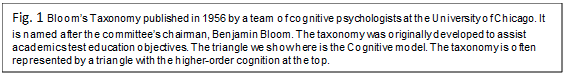
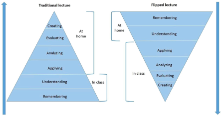
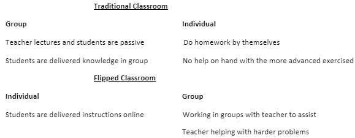

Flipped classroom, a form of blended classroom, is an example of technology being used to enhance student’s learning experience. It is essentially changing the place, time and method of delivering educational material, mainly through online means. According to The Online Learning Consortium, hybrid courses as those that “integrate online with traditional face-to-face class activities”.
The Founders of The Flipped Classroom
In 2008 Woodland Park High School chemistry teachers Jonathan Bergmann and Aaron Sams stumbled across a better way to use their classroom time. Having difficulty finding the time to reteach lessons for absent students, they invested in technology to record and post their lessons online. Those who had missed their classes appreciated this. They also found that those who had not missed their classes were using the videos, mainly to review and reinforce the lessons. The idea of the flipped classroom was born.
A Paradigm Shift
The flipped classroom is classroom is a paradigm shift, whereby Bloom's Taxonomy, a way of classifying cognitive learning from the 50s, is flipped upside down. Videos viewed out of the classroom followed by problem solving in the classroom is the typical model we looked at. Fig. 1 presents the Bloom’s Taxonomy triangle in its original form and the inverted form to represent The Flipped Classroom. Homework is done in class, while learning new information is done away from the classroom. Student are responsible for accessing the knowledge on their own in their own time. Class time, which is considered the scarce resource, is used to analyse, and debate objectives and collaborate on exercises.


The lower cognitive order skills, thought to be Remembering and Understanding, is left the student to acquire in their own time, while the higher cognitive skills, Applying, Analysing, Evaluating and Creating are practised in the classroom with the assistance of the teacher. In the flipped model, the classroom becomes a place where student now acquire and improve their skills that more closely mirror an exam situation or a practical work situation where collaboration is required in group projects, Missildine et al. (2013). (Marshall and DeCapua, 2013) concur that the flipped classroom model allows students to shift their focus to the higher cognitive skills on Bloom’s Taxonomy triangle.
Flipped Classroom can also be thought of in terms of Group learning vs Individual learning. In traditional classrooms the teacher lectures at the front of the classroom while the students listen passively in a group environment, then they are sent home to do homework on their own with no help from the teacher.
The flipped classroom is the inverse of this. The individual students are instructed to view online content on their own as homework and then they come to class and work on exercises and projects with assistance from the teacher. They have help with more difficult problems in the group environment. Knewton (2013) views instructors now as a facilitator for the students in the classroom environment.

Importance of The Flipped Classroom
The importance for educators to use available technologies in their classroom cannot be overstated. Aaron Taylor (2015) proffers that “A major development in recent pedagogical practice has seen the invention, development and implementation of the flipped classroom”. Today’s education environment means that educators are expected to be proficient in new technologies that supports the flipped classroom and to take full advantage of them, Rennie and Morrison (2013).
Made 6 June 2021.
thanks to W3C for tutorial and adapted code from Style Examples
also thanks to WDN for HTML and CSS resources and any adapted code snippets from Mozilla Developer Network